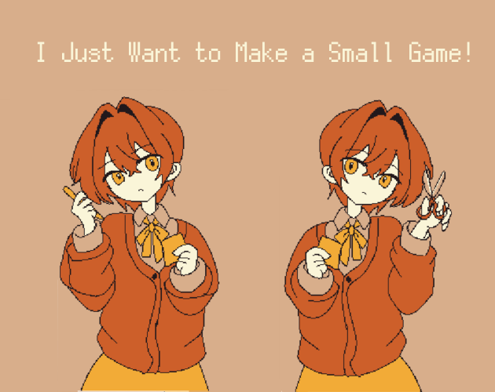

『小さなゲームをつくりたい！』は、私が個人でゲームを制作するなかで、ずっと悩んできたことをもとに作ったゲームです。
小さなゲームを作ろうとするたびに、新しいアイデアが次々と浮かんできます。
「これも追加したらどうかな？」
「こっちも試してみたら面白いんじゃない？」
そうして気づけば、小さかったはずの企画が、ずいぶん大きくなってしまっています。
ときどき、自分の中にふたりの人がいるように感じます。
ひとりは、アイデアを考えるのが大好きな自分。あらゆる可能性にわくわくして、何でも試してみたくなる。
もうひとりは、ゲームを完成させたい自分。あれもこれも追加していたら、いつまで経っても完成しないことを知っています。
どちらも間違っていません。
どちらも、私自身です。
The Two Sides of Me
アイデアを生み出す自分と、ゲームを完成させようとする自分。

このふたりが、『小さなゲームをつくりたい！』の原点になりました。
ゲームの中では、アイデアを剪定していくことで、完成できる形に整えていきます。
でも、何かを切り捨てるのは、少し寂しいことでもあります。
切り落としたアイデアも、かつては自分が作りたいと思ったものです。どんなに小さなアイデアにも、少しのわくわくが詰まっていました。
だから私は、次々とアイデアを思いつく自分を、打ち負かすようなゲームにはしたくありませんでした。
ふたりの自分が、どちらも前に進める方法を見つけるゲームにしたかったんです。
そして、私にとって「小さなゲームを作る」というのは、きっとそういうことなんだと思います。
アイデアを減らすことではなくて。
その中からひとつを選んで、世界に送り出すこと。
遊んでくれて、ありがとうございました！
— NULLLATTE
I made I Just Want to Make a Small Game! based on a problem I've struggled with as a solo game developer.
Whenever I try to make a small game, new ideas keep appearing.
“What if I added this?”
“Wouldn't it be fun if I tried that too?”
Before I know it, my little project has grown into something much bigger.
Sometimes, it feels like there are two people inside me.
One loves coming up with ideas. She's excited about every possibility and wants to try everything.
The other just wants to finish a game. She knows that if I keep adding things, I might never reach the end.
Neither of them is wrong. They're both me.
The Two Sides of Me
One creates ideas. The other tries to finish the game.
That's where the idea for this game came from.
In the game, you prune away ideas to make room for something you can actually finish.
But pruning is a little sad, too.
Every idea you cut away was once something you wanted to create. Even the smallest ones held a little excitement.
I didn't want the game to be about defeating the part of myself that dreams up new ideas.
I wanted it to be about finding a way for both sides of me to move forward together.
And maybe that's what making a small game really means to me.
Not having fewer ideas.
Just choosing one to bring into the world.
Thank you for playing!
— NULLLATTE